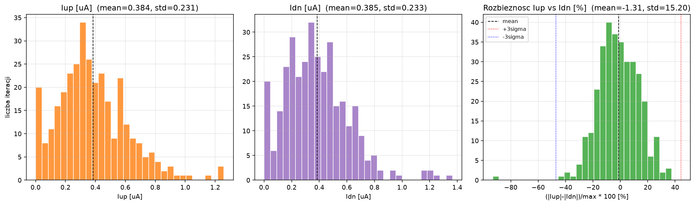
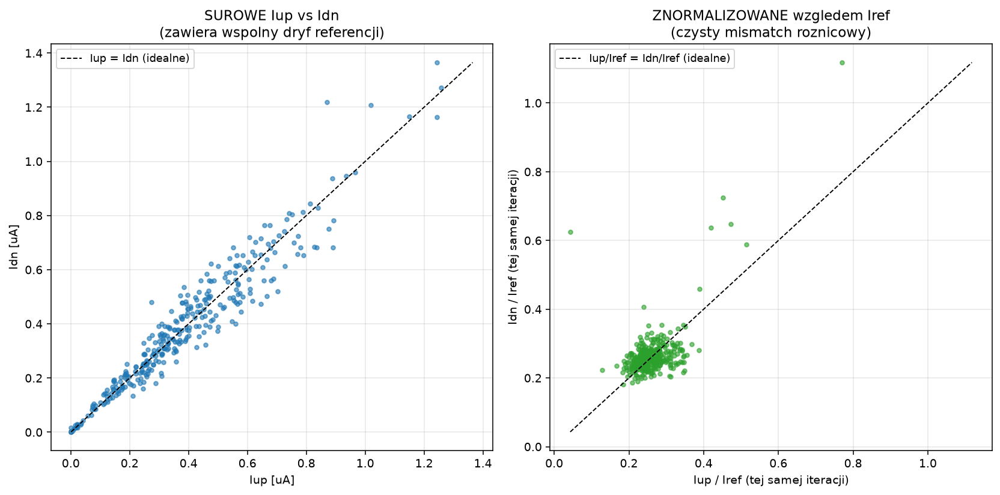
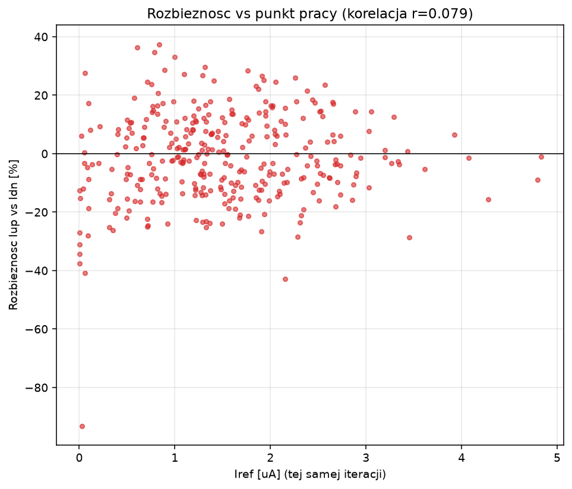

N = 330 iteracji, kazda z innym rndseed. Iup/Idn liczone srednia wazona czasem TYLKO gdy odpowiednie zrodlo sterujace (Vup2/Vdn2) jest aktywne. Iref usredniony w ostatnich 20% symulacji (stan ustalony).
| Wielkosc | srednia | odchylenie std | min | max |
|---|---|---|---|---|
| Iup [uA] | 0.3842 | 0.2307 | 0.0009 | 1.2583 |
| Idn [uA] | 0.3850 | 0.2327 | 0.0014 | 1.3651 |
| Iref [uA] | 1.5100 | 0.8812 | 0.0012 | 4.8291 |
| Rozbieznosc [%] | -1.31 | 15.20 | -93.12 | 37.41 |
Rozbieznosc 3-sigma (worst-case estymacja): 44.27%
Korelacja rozbieznosci [%] z Iref: r = 0.079 (BRAK zaleznosci od punktu pracy)


